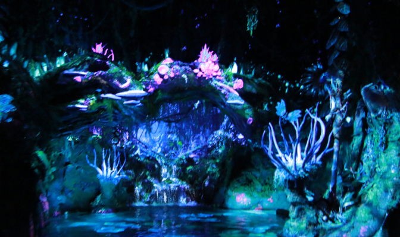
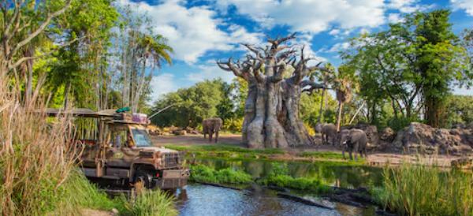
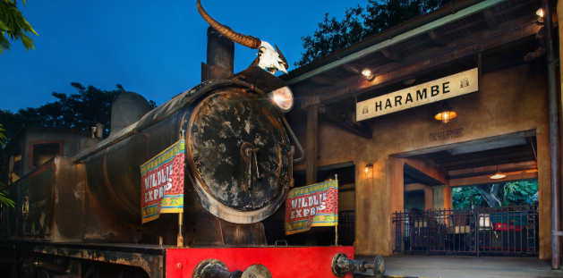
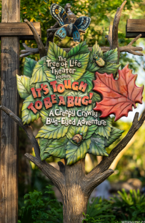

Animal Kingdom - Kid Friendly Day
A day for the whole family to enjoy at the Animal Kingdom. Making sure that you get to the parks early is very important especially if you have kids that don't like to wait in long lines. By getting to the parks early you eleminate time that you would be wasting in lines.
Na'vi River Journey
The very first ride that you head to once you are in the parks is the Na'vi River Journey ride. This ride does not have a long wait in the morning because everyone goes to Flight of Passage however, if you don't go here early it will build up due to everyone coming here after they ride Flight of Passage.
Kilimanjaro Safaris
This is near Na'vi River Journey and it is about a five minute walk. This ride is a very nice ride because it is the longest ride in the park. You get in a safari vehical and you are taking through lots of different areas where you can see lots of animals that are in areas designed like their natural habitat.
Wildlife Express Train
This is a train that takes you over to an area with a petting zoo and an animation location where there is an animator who walks you through drawing a character make sure you pay attention to the time because they have ceratin characters at certain times. You can expect to spend an hour or so over here and maybe longer if you have kids who love animals!
It's Tough to be a Bug
Finally head over to It's Though to be a Bug this is a good show to end the day. By the end of the day most kids are tired and this is the perfect chance to take a break from the heat before heading home. Watch Flick and his bug friends as they preform a 4D experince.